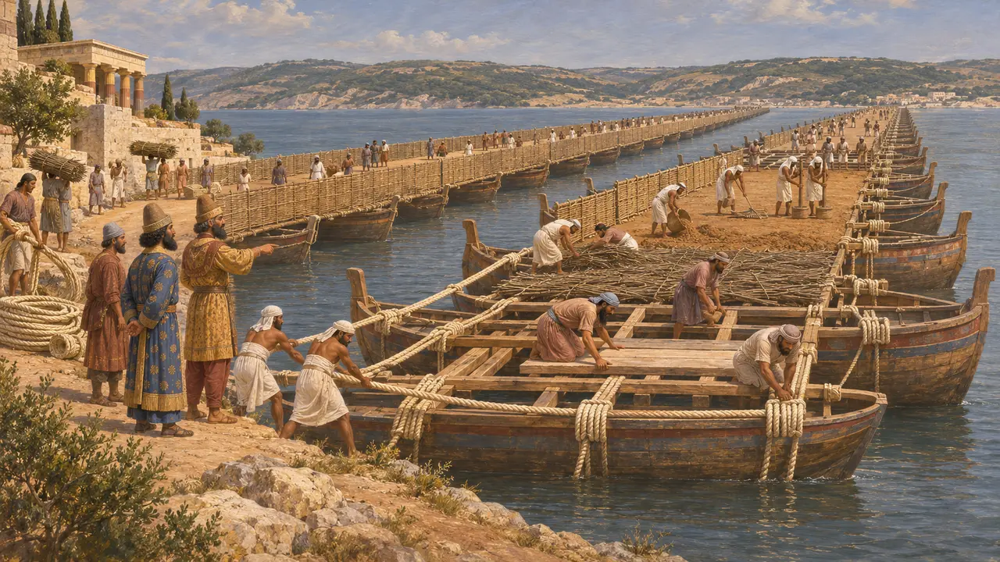
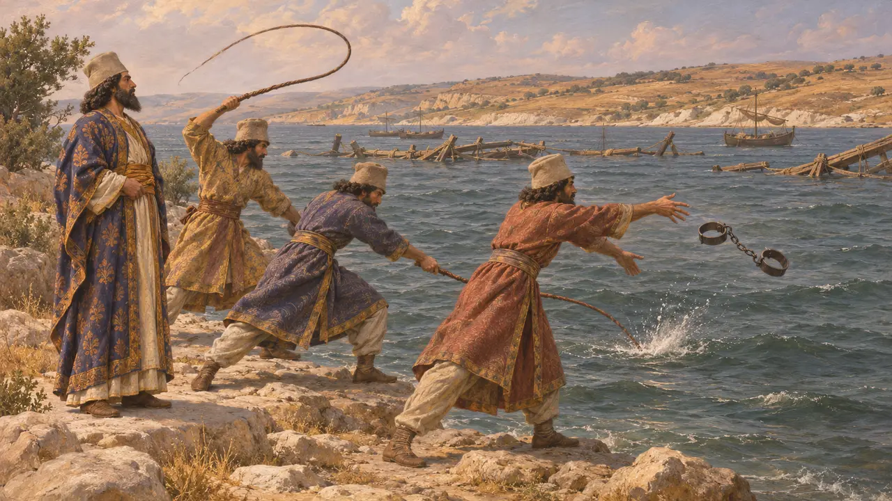
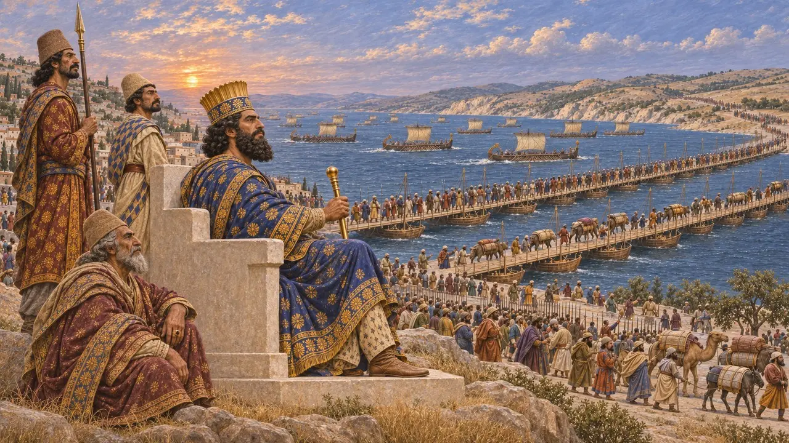
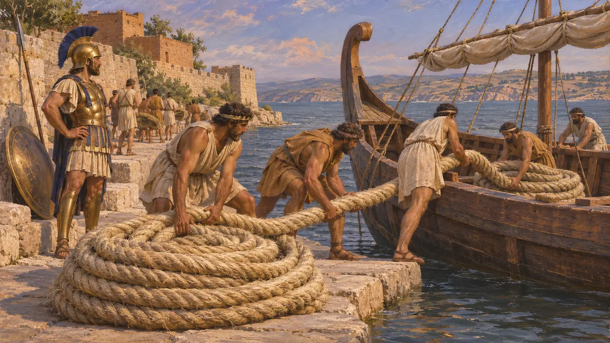
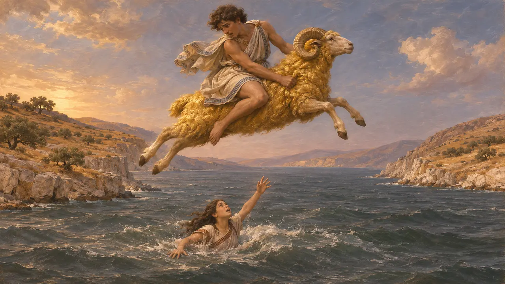

Hellespontos
Asya ile Avrupa arasındaki boğaz; MÖ 481-480'de Kserkses için Abydos'ta üzerine köprü kuruldu
Oyunda: Bölüm 9: Kanal, Bölüm 11: Final, Mykale
Bugün Çanakkale Boğazı olan Hellespontos, Ege ile Marmara Denizi arasında Asya'yı Avrupa'dan ayıran dar boğazdır. MÖ 480'de Kserkses, Yunanistan'ı istila etmek için Abydos yakınında iki tekne köprüsüyle buradan geçti. Herodotos bu geçişi kraliyet gücünün ve kibrinin merkezî bir imgesi yaptı; geçiş hakkında bilinenlerin neredeyse tamamı Yunan yazarlardan gelir.
Oyunda: Oyunun kroniği Abydos'taki boğazı, MÖ 481-480'de bir fırtına ilk köprüleri yıktıktan sonra Kserkses için iki kez teknelerle köprülenen ve yedi günde geçilen yer olarak sunar. Bu anlatım, tek ayrıntılı kaynak olan Herodotos'u izler.

Köprülerin inşası
Antik anlatıHerodotos'a göre Abydos'tan Sestos ile Madytos arasındaki kıyıya uzanan yedi stadionluk mesafeyi önce Fenikeli ve Mısırlı tayfalar, beyaz keten ve papirüs halatlar kullanarak köprüyle bağladı. Bir fırtına bu işi yerle bir etti. Ardından yeni mühendisler köprülerden biri için 360, diğeri için 314 gemiyi demirledi. Gövdelerin üzerinden halatlar gerip üstüne kalaslar, çalı çırpı ve toprak döşediler; hayvanlar suyu görmesin diye de kenarlara perdeler koydular.
Herodotus 7.33-36

Denizin cezalandırılması
TartışmalıHerodotos'a göre Kserkses boğaza 300 kırbaç vurdurdu, içine bir çift pranga attırdı ve çöken köprülerin başındaki gözetmenlerin başlarını kestirdi. Herodotos bunu kibir olarak sunar; Aiskhylos da denizin boyunduruğa vurulmasını tanrılara karşı bir suç sayar. Bazı tarihçiler hikâyede düzensiz bir suya karşı yapılan bir Pers ayinini görür; kimileri ise bunda Yunanlıların ahlak dersi verme eğilimini görür. Hiçbir Pers yazıtı köprülerden söz bile etmez.
Herodotus 7.35; Aeschylus, Persians; P. Briant, From Cyrus to Alexander, 2002

Teftiş ve geçiş
Antik anlatıHerodotos, Kserkses'in Abydos'ta bir tepenin üzerindeki beyaz taştan bir tahta oturup gemilerinin yarışını ve ordusunun kıyıyı doldurmasını izlediğini anlatır. Gün doğarken bir sunu döktü ve suya altın bir kadeh, bir tas ve bir Pers kılıcı attı. Savaşçılar köprülerden birini, yük hayvanları ötekini kullandı ve geçiş yedi gün yedi gece sürdü. Herodotos'un verdiği beş milyonu aşan toplam sayı, modern tarihçilerin kabul ettiğinin çok ötesindedir.
Herodotus 7.44-45, 7.54-56, 7.186

Dönüş ve ele geçirilen halatlar
Antik anlatıHerodotos'a göre Kserkses Salamis'ten sonra geri döndüğünde fırtınalar köprüleri çoktan yıkmıştı, bu yüzden ordu gemilerle karşıya geçti. MÖ 479'da, Mykale'den sonra Atinalılar boğaza yelken açtı, Sestos'u kuşattı ve köprü halatlarını kutsal alanlarına adamak üzere yurtlarına götürdü. Sestos'un Pers valisi Artayktes yakalanıp idam edildi.
Herodotus 8.117; Herodotus 9.114-121

Helle'nin denizi
Geç dönem efsanesiYunanlılar boğaza Helle'nin denizi derdi. Mite göre Phriksos ve kız kardeşi Helle üvey annelerinden altın postlu bir koçun sırtında kaçmış, Helle suya düşüp boğulmuştu. Herodotos, Kserkses'in ordusunun önünden geçtiği Khersonesos'taki bir Helle mezarından söz eder. Karşılıklı kıyılarda geçen Hero ile Leandros'un aşk hikâyesi ilk olarak Ovidius'unki gibi Roma dönemi şiirinde, daha sonra da Yunan şair Musaios'ta karşımıza çıkar.
Herodotus 7.58; Apollodorus, Library; Ovid, Heroides 18-19
Kaynaklar
- Herodotus, Histories 7.33-58
- Herodotus, Histories 8.117 and 9.114-121
- Aeschylus, Persians
- P. Briant, From Cyrus to Alexander, 2002
- N. G. L. Hammond and L. J. Roseman, The construction of Xerxes' bridge over the Hellespont, 1996